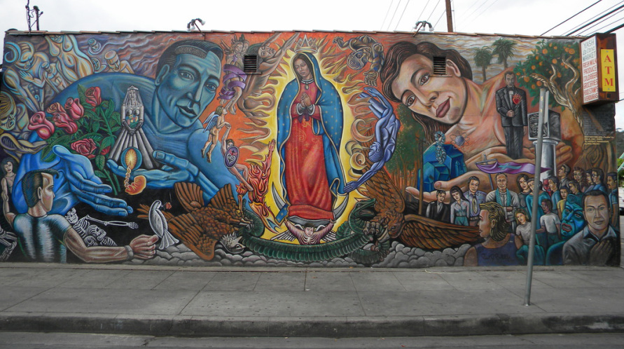

My Name
My name is Mariela Centeno. It took me a long time to become accustomed to this name. To some, there are too many syllables and it is too long to pronounce. Others have a difficult time rolling the r in the middle of my name. Therefore, as a young child, it became difficult to proudly announce my name. Nonetheless, as I have learned about the meaning behind my name, I have grown into it. To me, my name is a reminder of where I am from. It is a reminder of my native tongue. And, most importantly, no matter where I go in life, it will always serve as a reminder of the person who gave it to me, my mother.
My Home
I grew up in Southern California and decided to say here for college. To me, there is nothing as grandiose as a southern California sunset. The weather is undeafeatable and the beaches smell like home.
Nonetheless, the most remarkable thing about southern california is the culuture. Somehow, different subgroups and culutures have perfectly fit into different pockets of the entire area. From the coast to the Inland Empire, southern California moves to the rhythms of its diverse cultures. So, in most places you may find yourself in southern California, you will find a good restaurant around the corner and you will find yourself trying things you would have never dreamed about.
Links to related Pages
Visit Introduction to Hacking